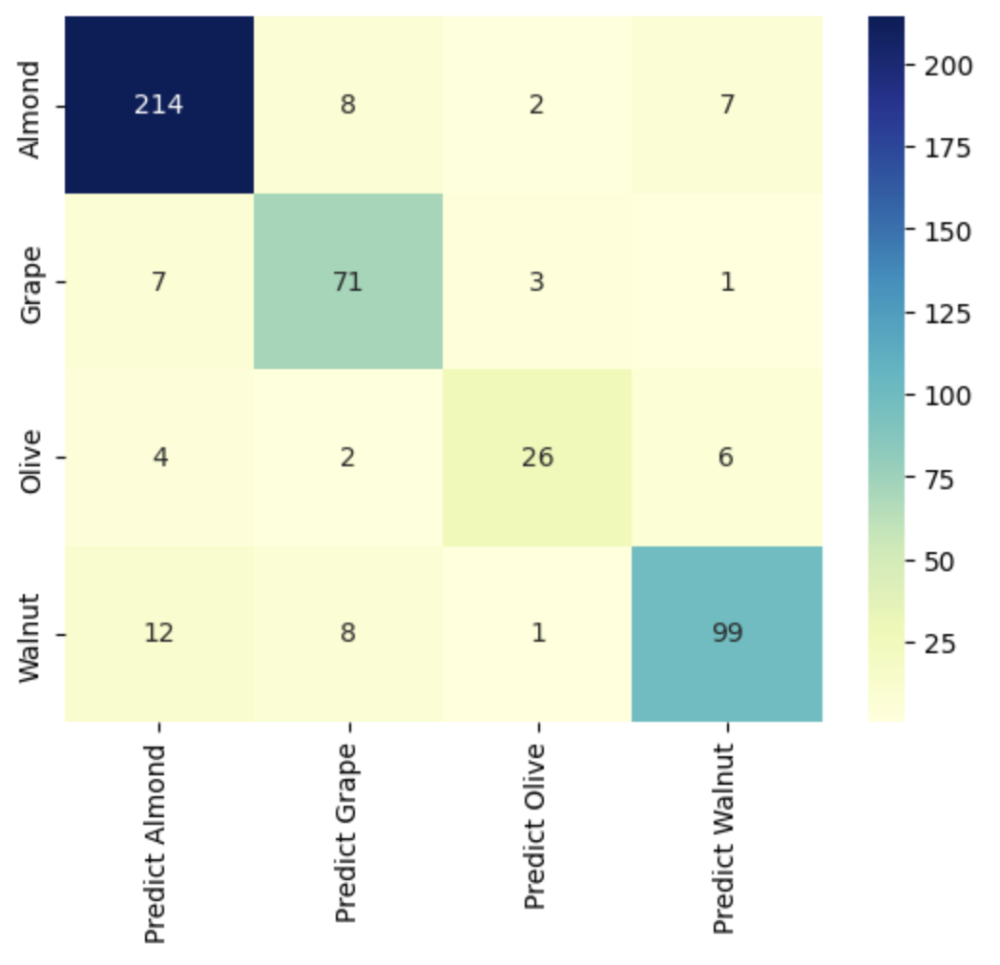
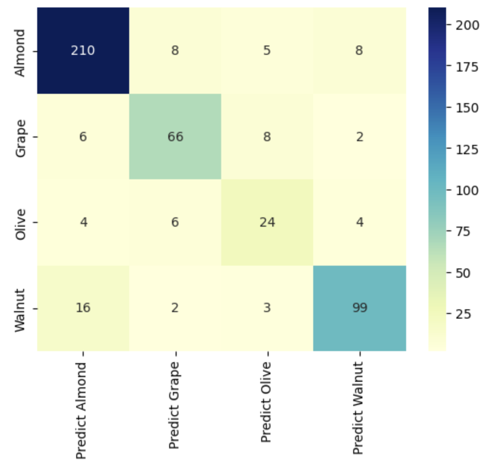

library(raster) #Uploading sentinel data
library(sf) #Uploading crop shapefile
library(exactextractr) #For extracting pixel values in crop fields
library(tidyverse) #For filtering fields by crop type
library(parallel) #For parallel processing
library(foreach) #For parallel processing
library(doParallel) #For parallel processing
library(tictoc) #For parallel processingNote: This is a project that created back in April 2023, on my previous website. Additionally, the full code for this project is available in a Github repository here.
Part 1: Introduction
One of the research projects I worked on early during my time in graduate school was to analyze the upper elevation limit of agriculture and agrobiodiversity change in the Peruvian Andes. For this project, I did an extensive literature review of on the remote sensing of agriculture and using machine learning techniques to classify crops by species. Unfortunately, I was unable to complete the remote sensing/machine learning portion of the project, due to unforeseen data limitations.For a while now, I have wanted to apply my skills I have learned from this experience.
For this project, I used Random Forests and Support Vector Machine algorithms to classify four different crops in Yolo County, CA, which is just west of Sacramento. I used both R and Python for this project: R was used to clean the data, calculate vegetation indices, and to extract pixel values to the crop fields. Python (run in google colab) was used for machine learning.
Part 1A: Datasets
There were two datasets that were used in this project:
- Level 2A Sentinel-2 data of Yolo County, from June 28th, 2020
- A shapefile of Crops in Yolo County, CA for 2020 (from Esri Open Data/Yolo County)
Part 1B: Packages
Below are a list of the R packages I used for this project, and a brief explanation of how the package was used in this project.
Below are a list of the Python packages I used for this project, and a brief explanation of how the package was used in this project.
import pandas as pd #For Data Manipulation
import seaborn as sns #For plotting confusion matrix
from sklearn.ensemble import RandomForestClassifier
from sklearn.svm import SVC #For Running SVM algorithm
from sklearn.metrics import confusion_matrix #For creating confusion matrix
from sklearn.model_selection import train_test_split #For splitting data
from sklearn import preprocessing #For normalizing data (SVM Only)Part 1C: Functions (Vegetation Indices)
For this project, I created functions to calculate five vegetation indices that are present in the agricultural remote sensing literature:
#Enhanced Vegetation Index (EVI)
EVI <- function(B2, B4, B8) {
EVIscore <- 2.5 * ((B8 - B4) / (B8 + 6 * B4 - 7.5 * B2 + 1))
return(EVIscore)
}#Green Chlorophyll Index (GCI)
GCI <- function(B3, B8) {
GCIscore <- (B8/B3) - 1
return(GCIscore)
}#Plant Senescence Reflectance Index (PSRI)
PSRI <- function(B2, B4, B6) {
PSRIscore <- (B4-B2) / B6
return(PSRIscore)
}#Soil-Adjusted Vegetation Index (SAVI)
SAVI <- function(B4, B8) {
SAVIscore <- 1.5 * (B8 - B4) / (B8 + B4 + 0.5)
return(SAVIscore)
}NDTI <- function(B11, B12) {
NDTIscore <- (B11 - B12) / (B11 + B12)
return(NDTIscore)
}Part 2: Data Preparation
The end goal of the data preparation section in R is to create a csv file of each walnut, almond, grape (wine) and olive field with following columns:
- Crop Type of the field (walnut, almond, grape or olive) (1 column)
- The mean reflectance value for all pixels in a crop field for Band 2 (Blue), Band 3 (Green), Band 4 (Red), Band 5 (Red-Edge), Band 6 (Red-Edge), Band 7 (Red-Edge), Band 8 (NIR), Band 8a (NIR), Band 11 (SWIR), Band 12 (SWIR)
- The mean pixel value of five vegetation indices (EVI, GCI, PSRI, SAVI, and NDTI). These bands and indices will all be inputs into the machine learning model.
Part 2A: Image Processing
There are two steps in this part. First, the bands from the satellite images must be divided by 10000 to get the reflectance values (the bands are not automatically at reflectance value due to storage and technical reasons). The code is pretty straightforward
for (i in 1:4){
YoloCoImages10m[[i]] <-YoloCoImages10m[[i]] / 10000
}
for (i in 1:8){
YoloCoImages20m[[i]] <- YoloCoImages20m[[i]] / 10000
}The next step is to create raster layers of the different vegetation indices. We do this using the functions created in part 1C.
Part 2B: Pixel Extraction
In this part, we use the exact_extract function to extract the mean pixel value of the crop fields, and add them as a column to the crop shapefile. An example of the code is below, where “EVIYoloCo” is the raster layer, “Crops”, is the shapefile, and “mean” is the statistic used:
Crops$EVI <- exact_extract(EVIYoloCo, Crops, "mean")Part 2C: Filtering Fields by Crop Type
The next part is to filter the crops dataset to include only the fields that are walnut, almond, grape (wine) or olive crops. These crops were selected because they had the highest number of observations in the dataset. This can be done using dplyr:
Crops <- Crops %>% filter(croptype == "OLIVE" | croptype == "WALNUT" |
croptype == "ALMOND" | croptype == "GRAPE, WINE")Note: This part can be done before extracting the pixel values, it depends on personal preference.
Part 3: Machine Learning Classification
I ran two different machine learning models for classifying the crops, using the sklearn package in python: random forests and support vector machine (SVM). For the random forest model, the number of trees was 80. For the SVM model, I used a linear kernel and C parameter of 15. For both models, the train/test split was 70/30.
Part 3A: Random Forests
Below is the code used for the running the random forests model:
# Split data into training and test datasets
X_train, X_test, Y_train, Y_test = train_test_split(X, y, test_size=0.3, random_state=0)
#Build Random Forest Classifier
forest = RandomForestClassifier(n_estimators=80, n_jobs=-1,
random_state=42)
forest.fit(X_train, Y_train)
Y_predRF = forest.predict(X_test)
#Get Scores
print('Training set score: {:.4f}'.format(forest.score(X_train, Y_train)))
print('Test set score: {:.4f}'.format(forest.score(X_test, Y_test)))The random forests classifier was very accurate, as the accuracy score for the training dataset was 100%, while the accuracy score the test dataset was 87%. However, the 13% difference between the training and test scores suggests overfitting. We can take a closer look into the classification of the crops using a confusion matrix:
#Create confusion matrix for Random Forests
from sklearn.metrics import confusion_matrix
confusionmatrix=confusion_matrix(Y_test, Y_predRF)
cm_matrix = pd.DataFrame(data=confusionmatrix, columns=['Predict Almond', 'Predict Grape', 'Predict Olive', 'Predict Walnut'],
index=['Almond', 'Grape', 'Olive', 'Walnut'])
sns.heatmap(cm_matrix, annot=True, fmt='d', cmap='YlGnBu')
Above is a confusion matrix for the test datasets and its predictions for the random forests model. The model was accurate 92.6% of the time for almonds, 86.6% of the time for grapes, 68.4% of the time for olives, and 82.5% of the time for walnuts. The most common misclassification was walnuts being classified as almonds (12 times)
Part 3B: Support Vector Machine
There is one additional preprocessing steps that needs to take place before running the SVM model, which is to normalize the data:
#Normalize the input data
X_norm=preprocessing.scale(X)Now we can run the SVM model. The code for the SVM model is below:
#Split the data into train/test data
X_train, X_test, Y_train, Y_test = train_test_split(X_norm, y, test_size=0.3, random_state=0)
#Set kernel type to linear
linear_svc=SVC(kernel='linear', C=15.0, probability=True)
#Fit the data
linear_svc.fit(X_train,Y_train)
#Make Predictions
Y_predSVML = linear_svc.predict(X_test)
# Print Scores
print('Training set score: {:.4f}'.format(linear_svc.score(X_train, Y_train)))
print('Test set score: {:.4f}'.format(linear_svc.score(X_test, Y_test)))The SVM classifier was less accurate than the random forests classifier, as the accuracy score for the training dataset was 88%, while the accuracy score the test dataset was 84%. However, the SVM model had less overfitting than the random forests model, with a 4% difference between the training and test scores. We can take a closer look into the classification of the crops using a confusion matrix:
#Create confusion matrix for Random Forests
from sklearn.metrics import confusion_matrix
confusionmatrix=confusion_matrix(Y_test, Y_predRF)
cm_matrix = pd.DataFrame(data=confusionmatrix, columns=['Predict Almond', 'Predict Grape', 'Predict Olive', 'Predict Walnut'],
index=['Almond', 'Grape', 'Olive', 'Walnut'])
sns.heatmap(cm_matrix, annot=True, fmt='d', cmap='YlGnBu') Above is a confusion matrix for the test datasets and its predictions for the SVM model. The model was accurate 90.9% of the time for almonds, 80.5% of the time for grapes, 63.2% of the time for olives, and 82.5% of the time for walnuts. The most common misclassification was walnut crops being classified as almond crops (16 times).
Part 4: Next Steps
In future, some improvements I would make to the project include:
Expand the number of crops being classified. Spend more time tuning the hyperparameters for the machine learning models. Use neural networks to classify crop type. Try to run the entire project in one language (R or Python).